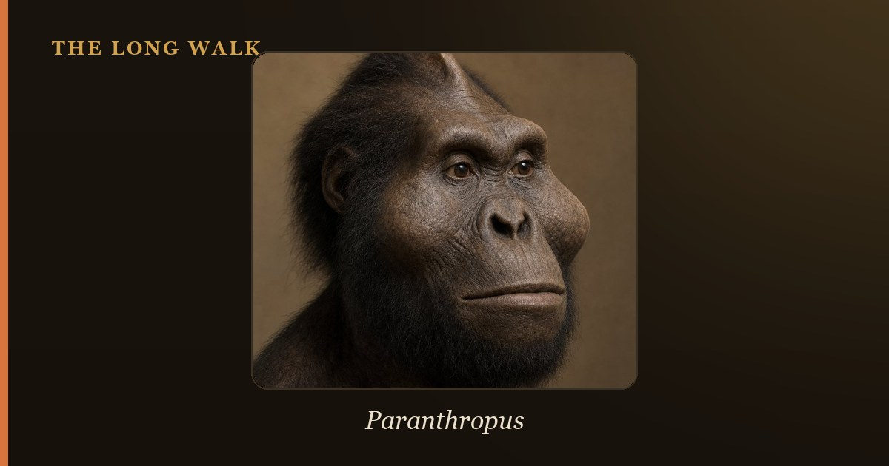

Paranthropus vs Australopithecus is a contrast between two ways of being an early hominin. Gracile Australopithecus (about 4.2 to 2 million years ago) had moderate jaws and teeth and a varied diet. Robust Paranthropus (about 2.7 to 1 million years ago) evolved huge cheek teeth, thick enamel and, in males, a bony crest for big chewing muscles. Isotopes show East Africa’s P. boisei ate mostly grasses and sedges, not hard nuts. Paranthropus died out; a gracile line probably led to Homo.

On 17 July 1959, Mary Leakey spotted part of a skull eroding out of a slope at Olduvai Gorge, Tanzania. Pieced together, OH 5 had molars as wide as a thumbnail, cheekbones that flared out like a shovel blade and a ridge of bone along the top of the skull. Louis Leakey named it Zinjanthropus boisei. The press called it “Nutcracker Man”.
The Paranthropus vs Australopithecus question starts with that skull. Both groups were small-brained, upright-walking African hominins, and the robust species are still placed in Australopithecus by some researchers. But they took the same starting body in two directions. One kept a general-purpose head. The other rebuilt its skull around the act of chewing. For decades everyone assumed they knew what that chewing was for. They were mostly wrong.
Paranthropus vs Australopithecus: one skull, rebuilt for force
Every robust feature serves one job: delivering large forces to the back teeth.
- The crest. The temporalis muscle, which closes the jaw, grew so big in male Paranthropus that its attachments met at the midline. Bone built up there as a sagittal crest. Gracile australopiths rarely show one.
- The cheekbones. The zygomatic arches flare wide and sit far forward, giving the masseter muscle more room and better leverage. Seen from the front, the face looks flat or even dished.
- The teeth. Premolars expanded until they looked like molars, and the enamel was very thick. Front teeth stayed small. In Australopithecus afarensis the canines and incisors were larger relative to the cheek teeth.
- The jaw. The lower jaw is deep and thick to resist bending under load.
The brain did not follow the jaw. Robust and gracile species both fall roughly between 400 and 550 cc, so the difference between them is about feeding, not intelligence.
| Trait | Paranthropus | Gracile Australopithecus |
|---|---|---|
| Time span | ~2.7–1.0 million years ago | ~4.2–2.0 million years ago |
| Species | P. aethiopicus, P. boisei, P. robustus | A. anamensis, A. afarensis, A. africanus, A. sediba and others |
| Brain | ~400–550 cc | ~400–550 cc |
| Cheek teeth | Very large, thick enamel, molar-like premolars | Large by human standards, moderate by robust ones |
| Skull top | Sagittal crest in males | Usually no crest |
| Diet signal | Grass and sedge heavy in East Africa; mixed in South Africa | Mostly woodland plants, with variation by species |
| Fate | Extinct, no known descendants | One population probably gave rise to Homo |
Three robust species, two regions
The oldest robust skull is KNM-WT 17000, the “Black Skull”, found west of Lake Turkana in 1985 and stained dark by manganese. At about 2.5 million years old, P. aethiopicus already has a crest and a huge chewing apparatus, but its face juts forward like an older australopith’s. P. boisei followed in East Africa from about 2.3 million years ago and became the most extreme of all. In South Africa, P. robustus is known from caves such as Kromdraai, Swartkrans and Drimolen, where Robert Broom named it in 1938.
Whether these three form one natural group is a real argument. One view treats them as a single lineage that branched from a gracile ancestor once. Another holds that East and South African robust forms evolved their big jaws in parallel from different gracile ancestors. If so, “Paranthropus” describes a way of life, not a family. That is why some textbooks write Australopithecus boisei. The question is unresolved.
The fossils also show change within a species. A 2021 study of the Drimolen skull DNH 155, about two million years old, argued that size and shape differences once read as male versus female in P. robustus are better explained by evolution over time, with later populations chewing more efficiently.
What the teeth actually say
For thirty years, the robust skull was read as a nutcracker. Big flat molars and thick enamel looked like equipment for hard seeds and nuts. Then two kinds of evidence came in that read the teeth themselves rather than their shape.
Microwear. Hard foods leave pits on enamel. In 2008, Peter Ungar, Fred Grine and Mark Teaford examined molars of P. boisei under the microscope and found few pits. The pattern looked more like animals that eat tough, fibrous plants.
Carbon isotopes. Tropical grasses and sedges use a photosynthetic pathway (C4) that leaves a distinct carbon signature in tooth enamel. Trees, shrubs and the fruits and nuts they produce (C3) leave another. In 2011, Thure Cerling and colleagues measured 24 P. boisei teeth and estimated that roughly three-quarters of the diet came from C4 plants. That is more like a grazing animal than any ape.
So “Nutcracker Man” was probably chewing large amounts of grass leaves, sedge stems and their underground parts for many hours a day. The big teeth and crest were built for volume and endurance, not for cracking a few hard nuts.
The South African species tells a different story. Laser sampling along single P. robustus teeth from Swartkrans showed carbon values shifting through an individual’s life, so its diet changed with season or year. Among the graciles, Australopithecus sediba at Malapa ate almost entirely C3 foods, including bark, while A. afarensis had a broader mix. “Robust equals hard food” turns out to be too simple, and so does “gracile equals generalist”.
Isotopes say which kind of plant carbon an animal ate, not which plant part. A C4 signal could come from grass seeds, leaves, sedge tubers or animals that ate those plants. Microwear records only the last weeks before death. Combined, they rule out a nut specialist, but they don’t fully settle the menu.
Did Paranthropus make tools?
Stone tools are usually credited to Homo. The evidence is less tidy. At Nyayanga in Kenya, a team led by Thomas Plummer reported in 2023 Oldowan tools between about 3.0 and 2.6 million years old, cut-marked hippo bones and two Paranthropus molars. No Homo fossils were found there.
At Swartkrans, Randall Susman argued in 1988 that P. robustus hand bones show a thumb capable of a precision grip, and bone tools from the same deposits may have been used to dig into termite mounds. In each case the problem is the same: a fossil found near tools does not prove who made them. Early Homo lived in the same landscapes. The claim that Paranthropus made stone tools is plausible but contested.
Why one line ended and the other did not
P. boisei fossils run to about 1.4 million years ago, and P. robustus to around a million. Gracile Australopithecus had already disappeared by about two million years ago, but not before one population, probably in East Africa, gave rise to Homo. Which species that was remains open; candidates include A. afarensis and A. garhi.
Why the robust branch vanished is not known. Proposed causes include drier, more variable climate, competition with Homo for plant foods and a feeding system that was hard to change. None is proven. What the fossils do show is that specialising on abundant, low-quality plants worked for more than a million years. Paranthropus shared Africa with early Homo for most of that time, as the overlap of Homo habilis and Homo erectus shows for our side of the family.
For the methods behind these diet reconstructions, see how scientists find out what extinct humans ate. For the gracile species in detail, see A. afarensis vs A. africanus.
See where the robust and gracile australopiths branch, and where our own genus splits off, on the interactive family tree.
Explore the family tree →Paranthropus vs Australopithecus FAQ
What is the main difference between Paranthropus and Australopithecus?
Paranthropus had a skull built for heavy chewing: very large cheek teeth with thick enamel, flaring cheekbones and, in males, a sagittal crest. Gracile Australopithecus had smaller jaws and teeth. Their brains were about the same size.
Was Paranthropus boisei really a nutcracker?
Probably not. Microwear on its molars shows few of the pits hard foods leave, and carbon isotopes suggest about three-quarters of its diet came from grasses and sedges.
Is Paranthropus a human ancestor?
No. Paranthropus is a side branch that died out about a million years ago. Our genus, Homo, most likely descends from a gracile Australopithecus population.
What are the three Paranthropus species?
P. aethiopicus (about 2.7 to 2.3 million years ago, East Africa), P. boisei (about 2.3 to 1.4 million years ago, East Africa) and P. robustus (about 2 to 1 million years ago, South Africa).
Is Gigantopithecus related to Paranthropus?
No. Gigantopithecus was a giant ape from southern China, closer to orangutans. It was once wrongly linked to human ancestry because of its large, flat molars, a resemblance that came from a similar tough-plant diet.
- Cerling, T. E. et al. (2011). 'Diet of Paranthropus boisei in the early Pleistocene of East Africa.' PNAS 108. pnas.org
- Ungar, P. S., Grine, F. E. & Teaford, M. F. (2008). 'Dental microwear and diet of the Plio-Pleistocene hominin Paranthropus boisei.' PLoS ONE 3. plos.org
- Sponheimer, M. et al. (2006). 'Isotopic evidence for dietary variability in the early hominin Paranthropus robustus.' Science 314.
- Plummer, T. W. et al. (2023). 'Expanded geographic distribution and dietary strategies of the earliest Oldowan hominins and Paranthropus.' Science 379. science.org
- Martin, J. M. et al. (2021). 'Drimolen cranium DNH 155 documents microevolution in an early hominin species.' Nature Ecology & Evolution 5.